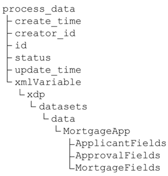

|

This section provides information about how to use XPath
expressions to work with task data that is submitted to the LiveCycle server:
Assessing review and approval results
You can use XPath expressions to assess the results of
review and approval processes from Task Result Collection values.
Assign Multiple Tasks operations enable you to create routes based
on the results of document reviews. However, the XPath expressions
are useful for the following situations:
-
Sequential reviews where a series of Assign Task operations
are used, and the results are accumulated in a Task Result Collection
value.
-
When routing decision need to be made sometime after an Assign Multiple
Tasks operation.
For example, a succession of users reviewed a document and selected
either the Approve or Reject user action. If a majority of reviewers
approve, the document is accepted. After the final review, the process
sends an email that includes the results of the review to all the
participants. XPath expressions are used to determine how many times
each action was selected.
Task Result values include the selectedUserAction data item that
stores the user action that was used to complete the task. You can
apply XPath functions to Task Result Collection values to determine
the number of tasks that were completed by using a specific action:
-
get-list-item-count:
-
Returns the number of times an action was selected.
-
get-list-item-percentage:
-
Returns the percentage of tasks that a specific user action
was selected.
These functions require an XPath expression
that resolves to the Task Result Collection and the name of the
action that you want information for. The following XPath expression
returns the number of times the action named
Approve
was
selected. The Assign Multiple Tasks results are stored in a Task
Result Collection variable named
TRCvar
:
get-list-item-count(/process_data/TRCvar/object/taskResults,'Approve','selectedUserAction')
The
function call includes
selectedUserAction
as the
property name parameter. This optional parameter is included because the
selectedUserAction data item of Task Result values stores the user
action that was used.
For Task Result Collection values only,
the get-list-item-count and get-list-item-percentage functions enable
you to simplify the expression, Specify only the path to the Task
Result Collection value, and do not provide a property:
get-list-item-count(/process_data/TRCvar,'Approve')
Retrieving form data from XMl variables
Adobe XML forms and Adobe PDF
forms can submit field data in XML data package (XDP) format. XDP.
XPath expressions are used for retrieving and setting form data
that is stored in variables. To access the data, you must know how
the data in the variables are represented internally.
The following process data model includes an XML variable named xmlVariable.

The root node of the data that is collected from the form is
named MortgageApp. The structure of the data below this node represents
the form schema. XDP data includes several levels of nodes above
the root node of the form data.
The following XPath expression retrieves all of the form data:
/process_data/xmlVariable/xdp/datasets/data
Using submitted data with Guides or Flex applications and forms
A common scenario involves collecting data using a Guide
or Flex application, and then displaying the data to a different
user in a form. It is also common to populate a Guide or Flex application
with data that was submitted with a form.
Guides, flex applications and forms use XML data. Forms that
are created using Designer require the XML to be in XDP format.
However, Guide and Flex application data do not include the XDP-specific
elements:
-
To populate a form with the data that is submitted from
a Guide or Flex application, you need to save the data in an XML
variable that is configured to store data as XDP. (See
Configuring XML variables for XDP data
.)
-
To populate a Guide or Flex application with data that is
submitted from a form, you need to remove the XDP-specific elements
from the XML. Use the Set Value service to extract the field data
and save it in another xml variable. Using the example XML data
from
Retrieving form data from XMl variables
, the following Set Value mapping
copies the field data from xmlVariable to xmlGuide, another xml
variable:
/process_data/xmlGuide = /process_data/xmlVariable/xdp/datasets/data/*
Document attributes for attachments and notes
When a file or note is attached to a
task, a document value is created to represent the attachment or
note. Several attributes are created for the document values that
are used to store information about the attachment or note.
|
Attribute name
|
Description
|
Default
|
|
|
The filename of the attached document or
the title of the note that the document represents. The value can
be the path to the file location and the filename, or just the filename.
|
Attach
number
,
where
number
is the index that indicates the
location of the document in a list variable used for storing the
attachments and notes.
|
|
|
The description of the attachment or the
note text
|
Empty string
|
|
|
The user ID of the user who attached the
document or provided a note to the task
|
Unique string that represents the user’s
identification
|
|
|
A bit mask number that represents the access
permissions for the document.
Access permissions determine
how the document can be used when it is attached to a task. The
value of the number is the sum of the number that represents each
access permission provided for the document.
Read access:
1
Write access:
2
Delete access:
4
Valid
values are 1, 3, 5, and 7. For example, the value of
wspermission
for
a document with read and write access is 3.
|
7
(Read, write, and delete
access)
|
|
|
A
string
value that indicates whether
the document represents an attachment or note:
|
The attachment type always determines the
value.
|
You can use XPath expressions to retrieve or set the value of
the attributes. (See
getDocAttribute
and
setDocAttribute
.)
For example, the notes and attachments of a task are saved in
a list variable named
attachmentVar
. The following
XPath expressions evaluate to the name, description, creator ID,
and permission of the first attachment in the list:
getDocAttribute(/process_data/attachmentVar[1],"wsfilename")
getDocAttribute(/process_data/attachmentVar[1],"wsdescription")
getDocAttribute(/process_data/attachmentVar[1],"wscreatorid")
getDocAttribute(/process_data/attachmentVar[1],"wspermission")
The following XPath expressions replace the values of the name,
description, creator ID, and permission for the first attachment
in the list:
setDocAttribute(/process_data/attachmentVar[1],"wsfilename", "BetterByAdobeRules.pdf")
setDocAttribute(/process_data/attachmentVar[1],"wsdescription", "desc")
setDocAttribute(/process_data/attachmentVar[1],"wscreatorid","00ECB211-F3A1-D93E-0EBE-EB13811A1C25")
setDocAttribute(/process_data/attachmentVar[1],"wspermission", "1")
Adding data nodes to xml variables
You can add nodes to the data tree
of xml variables and use them to store information during process
execution.
Note:
The added nodes do not appear in the data tree
in XPath Builder.
Add nodes by using XPath expressions. When you use an expression
that searches for a node that does not exist, LiveCycle ES2.5 creates
the node when it evaluates the expression. After the node is created,
you can use it the same way you use any other node in the tree.
The following rules apply when adding nodes:
For example, the following data tree is for a process that includes
an XML variable named xmlLoanForm. The root element of the form
schema is named MortgageSchema.
The following expression adds a node named
newNode
to
the schema:
/process_data/xmlLoanForm/xdp/datasets/data/MortgageSchema/newNode
|
|
|